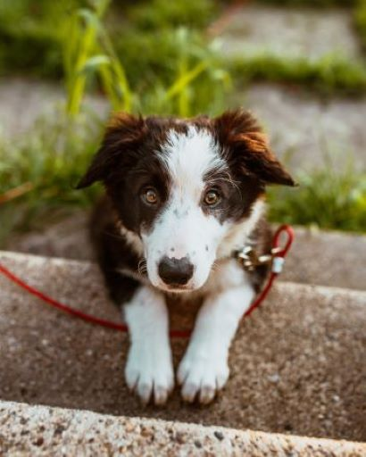

Get a Boarder Collie!
This is a page for people who are interested in getting a puppy, specifically of those wanting
to get a boarder collie!
Here's a Cute little boarder collie puppy!
visit

Photo by Josh Hild from Pexels
So why boarder collies?
- They are the smartest dog!
- They are great with kids and can make wonderful family pets!
- They are very loyal dogs!
- They are very active dogs!
- They can be your shepherd if you have a farm!
- ...
Where can I get one?